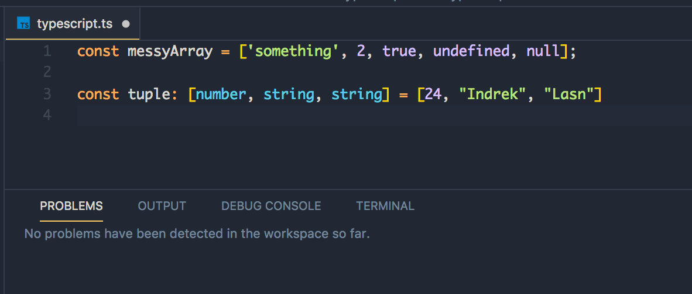
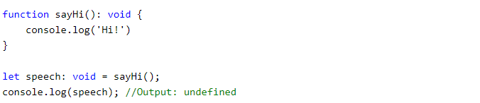
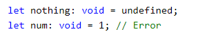
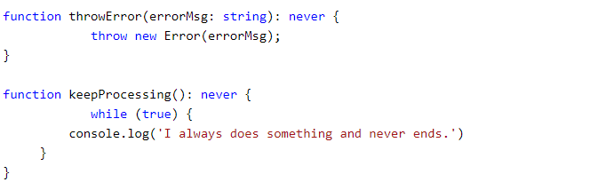
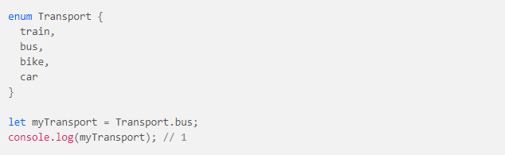
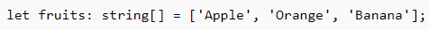
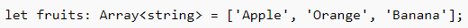

TypeScript is an open-source language which builds on JavaScript, one of the world’s most used tools, by adding static type definitions.
The goal of TypeScript is to be a static typechecker for JavaScript programs - in other words, a tool that runs before your code runs (static) and ensure that the types of the program are correct (typechecked).
TypeScript “solves” many problems JS has, it is a “superset” of JS, it will make your code less error-prone and pleasant to read. There are a lot of good reasons to use TypeScript.
TypeScript shares the same basic types with JavaScript:
but it has a couple of extra types:
Tuple is a data type which includes two set of values of different data types.
Void is used where there is no data type.
There is no meaning to assign void to a variable, as only null or undefined is assignable to void.
The never type is used when you are sure that something is never going to occur.
Enum are a TypeScipt data type that allow the organization of number-based collections of unique identifiers.
An array is a special type of data type which can store multiple values of different data types sequentially using a special syntax.
 Finally, we frequently see the question “Should I learn JavaScript, or TypeScript instead?“.
Answer is that you can’t do one without doing the other! Because TypeScript shares syntax and runtime behavior with JavaScript, anything you learn about JavaScript is helping you learn TypeScript at the same time.
Thanks